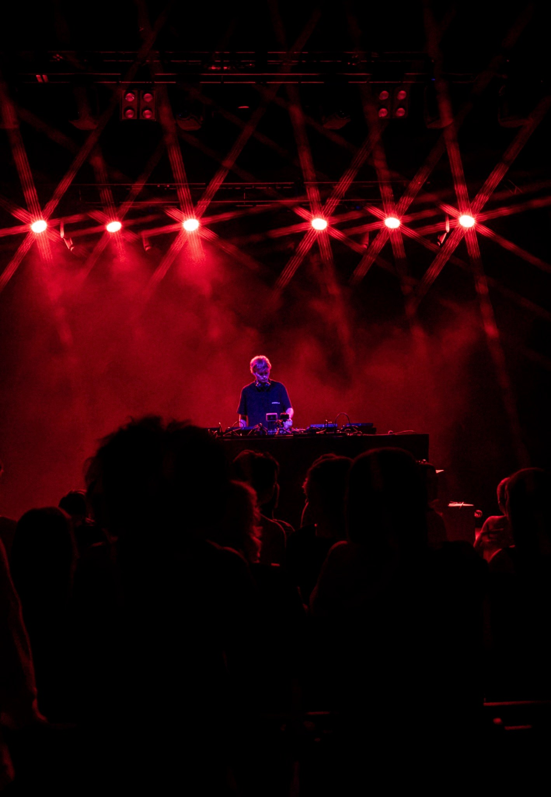
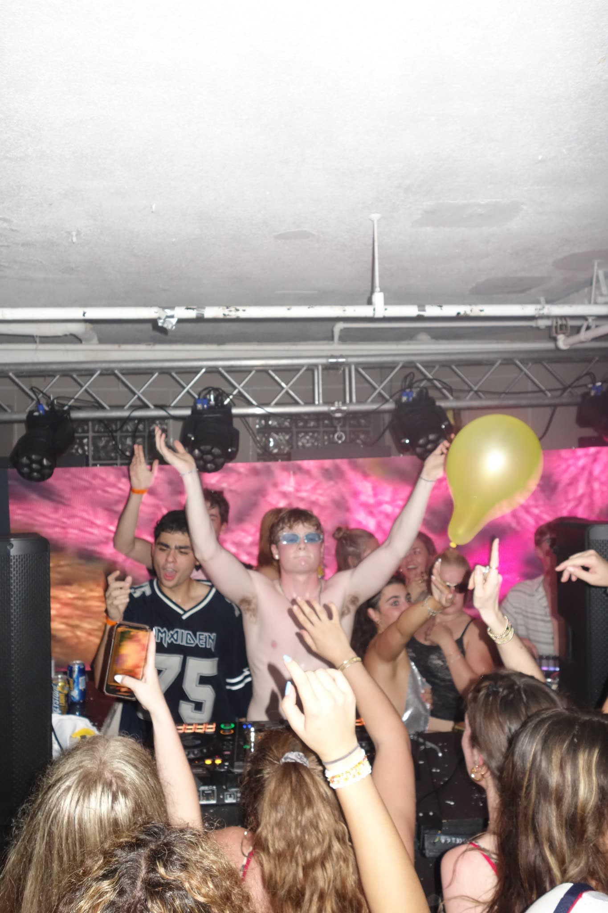

LIVE / 2026
02 / SELECTED PERFORMANCE
ROSSI. / BOULDER THEATER
September 24, 2026



03 / BOULDER
EARLIER SETS


04 / DATES
SHOWS
SEP242026
ROSSI.
Support — Boulder Theater
PlayedBoulder, Colorado
OCT292026
CHASEWEST
Support — Boulder Theater
UpcomingBoulder, Colorado
05 / ABOUT
JULES OSKAR
Jules Oskar is a house DJ and producer currently based in Boulder, Colorado, and relocating to Barcelona in January 2027.
His sets move between groove-heavy house, old-school vocals, and UK-influenced club records. After building a live following through packed Boulder parties, he opened for Rossi. at Boulder Theater in September 2026 and returns to support ChaseWest on October 29.
Before performing as Jules Oskar, he released Losing All Control on Broke Records under the name DUTCH.

RELEASED ONBROKE RECORDS
OPENED FORROSSI.
SUPPORTINGCHASEWEST
BASED 2027BARCELONA
06 / CONTACT
BOOKING
Based in Barcelona from January 2027. Available for bookings in Spain and across Europe.